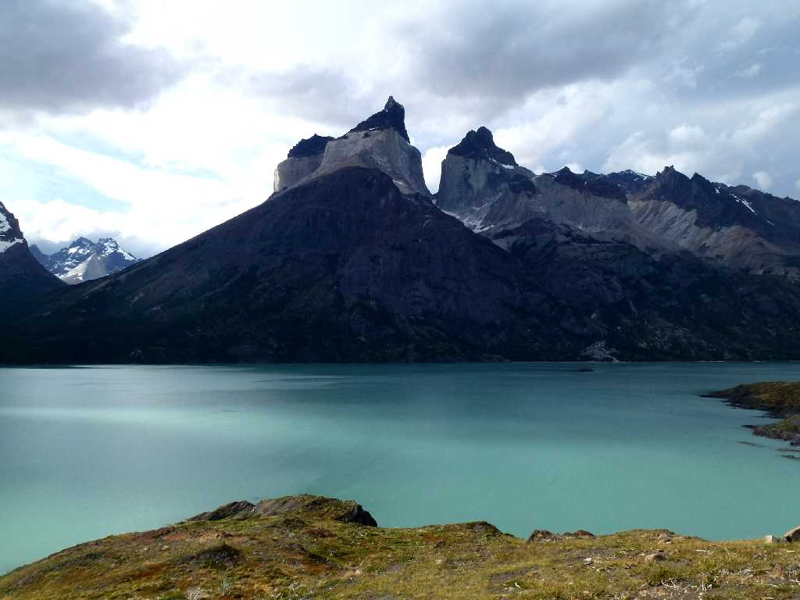
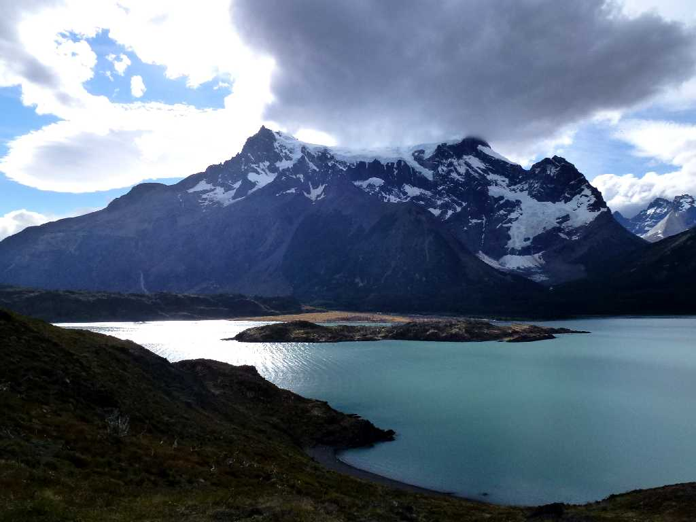
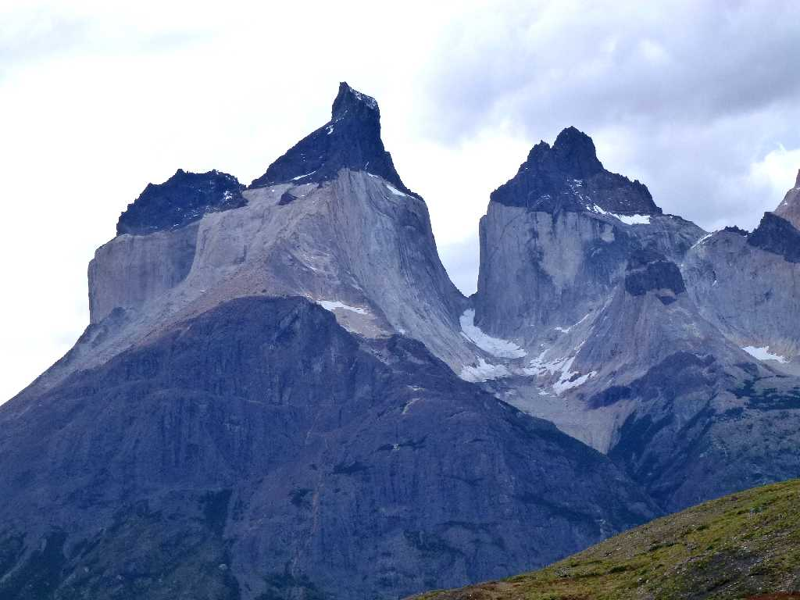
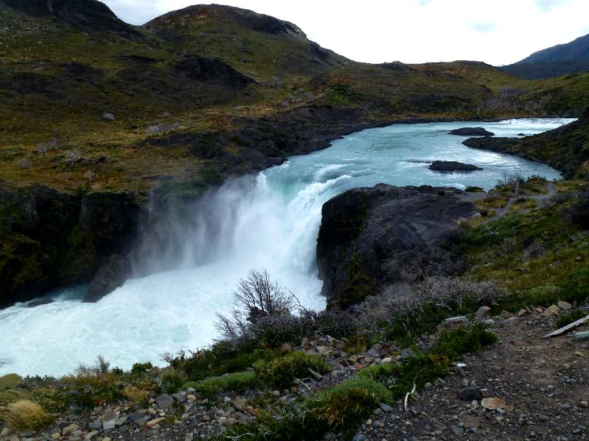
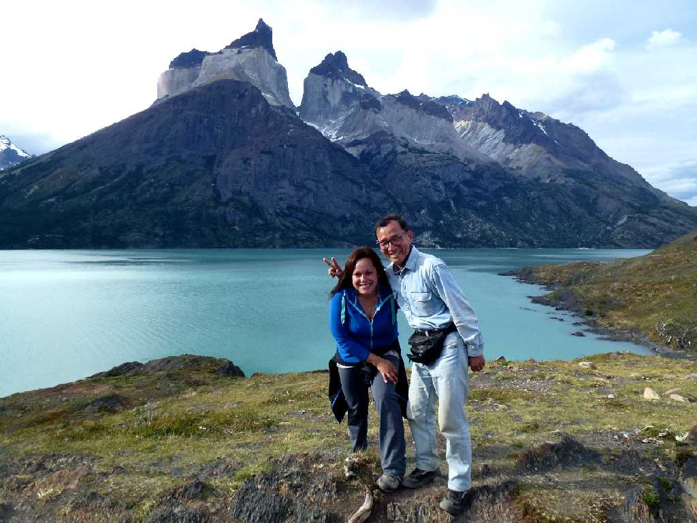

Cuernos del Paine Lago Nordenskjold Parque Nacional Torres del Paine
チリパタゴニアの絶景で先住民が青い塔の群と呼ぶトーレスデルパイネ国立公園のランドマークのクエルノスデルパイネ(パイネの角)

Lago Nordenskjold Parque Nacional Torres del Paine
氷河の水によりターコイズブルーに輝くノルデンスコールド湖

Cuernos del Paine Parque Nacional Torres del Paine

Salto Grande Parque Nacional Torres del Paine

February 16 2014 Cuernos del Paine Lago Nordenskjold Parque Nacional Torres del Paine